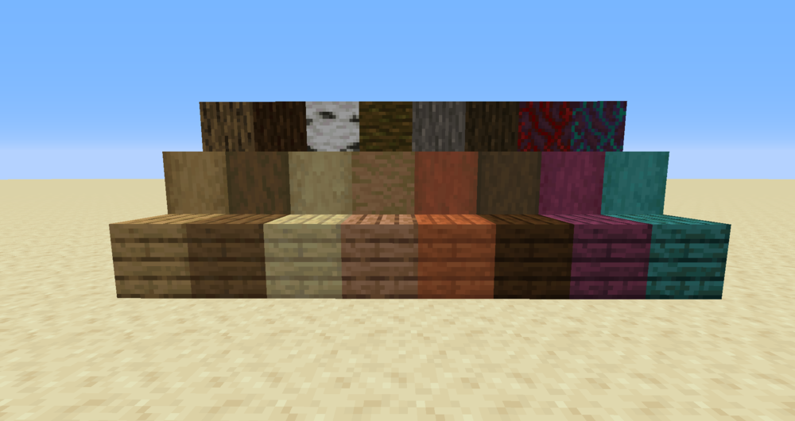

Bomen  Hout is een natuurlijk voorkomend blok dat wordt gevonden in bomen. Het komt voor in acht varianten: Eik Berk Spar Acacia Jungle Donker Eik Karmijnrood Warblauw Hout kan je vinden vooral vinden in bomen maar het wordt ook gebruikt voor de huizen van dorpelingen. De enige manier om hout te "maken" is door een kiemplantje te plaatsen en die te laten groeien. Kiemplantjes krijg je door bladeren van andere bomen. Van elk soort hout bestaat een versie waarbij alle zijden van boomschors zijn, dit is te verkrijgen door 4 houtblokken samen te voegen. Dit blok is enkel voor decoratie en kan niet in het wild gevonden worden. Het tweede blok dat te maken is van hout zijn planken, planken zijn 1 van de belangrijkste blokken in Mincraft. Dit is omdat het gebruikt worden voor veel verschillende dingen als deuren, gereedschap, schilden, boten, werkbanken, kisten, bedden en nog veel meer. Daarnaast woedt het vaak gebruikt voor het bouwen van huizen, door zowel spelers als dorpelingen. Elke soort hout heeft een plank versie die dezelfde kleur heeft als de boven- en onderkant van het houtblok waar het van gemaakt is. Steen Steen is een natuurlijk voorkomend bloksoort dat wordt gevonden ± 3 blokken (meter) onder de het grondoppervlak, aan de zijkant van bergen, op stranden, en op kliffen. Je kan het niet zelf maken. Het komt voor in vier varianten: Steen Dit blok is het meest voorkomende soort steen en het enige dat voor wat anders dan decoratie gebruikt kan worden. Als steen gebroken wordt veranderd het in keien . Keien kunnen gebruikt worden voor o.a. gereedschap en ovens. Als een keiblok wordt gesmolten in een oven veranderd het terug in een steenblok en als dat gesmolten wordt, wordt het gladsteen wat bijna alleen maar voor bouwen gebruikt kan worden. Graniet, Dioriet, Andesiet Deze blokken zijn minder voorkomend dan steen, maar zeker niet lastig te vinden. Ze worden alleen gebruikt voor decoratie, wel hebben ze allemaal een gepolijste versie die gemaakt wordt door vier blokken van 1 van de materialen bij elkaar te voegen op een werkbank. Erts Ertsblokken zijn natuurlijk voorkomend bloksoorten die gevonden kunnen worden onder de grond, als een ertsblok gebroken wordt laat het het soort erts achter wat er in zat. Er zijn 10 soorten erts met elk hun eigen nut. Als negen stukken van hetzelfde erts bij elkaar worden gevoegd in een werkbank zorgt dat voor een blok gemaakt van dat erts, dit kan gebruikt worden om grote hoeveelheden compacter op te bergen of om te laten zien aan andere spelers dat je er veel van hebt door je woning ervan te maken. De blokken kunnen weer terugveranderd worden in ertsen door het blok in de werkbank te doen, je krijgt dan weer 9 erts terug. Steenkool Steenkool wordt gebruikt als brandstof voor ovens, of wanneer samen met een stok zorgt het voor een fakkel, wat licht geeft. Ijzer Ijzer wordt gebruikt voor harnassen en gereedschap en schilden. Naast het standaard gereedschap kan ijzer ook nog gebruikt worden voor scharen en aanstekers. Steenkool Steenkool wordt gebruikt als brandstof voor ovens, of wanneer samen met een stok zorgt het voor een fakkel, wat licht geeft.